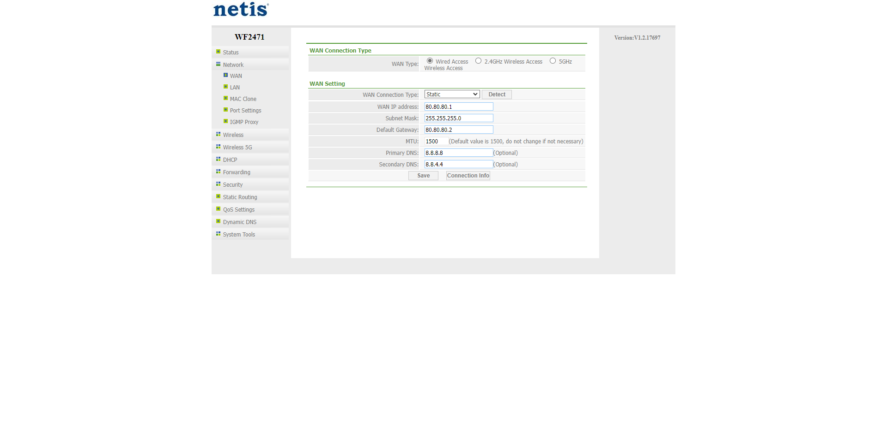
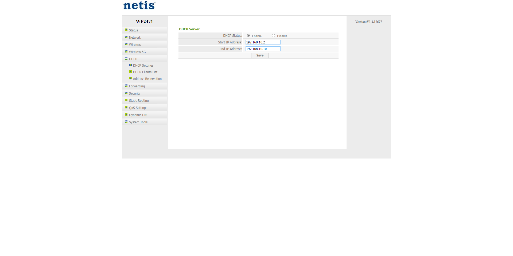
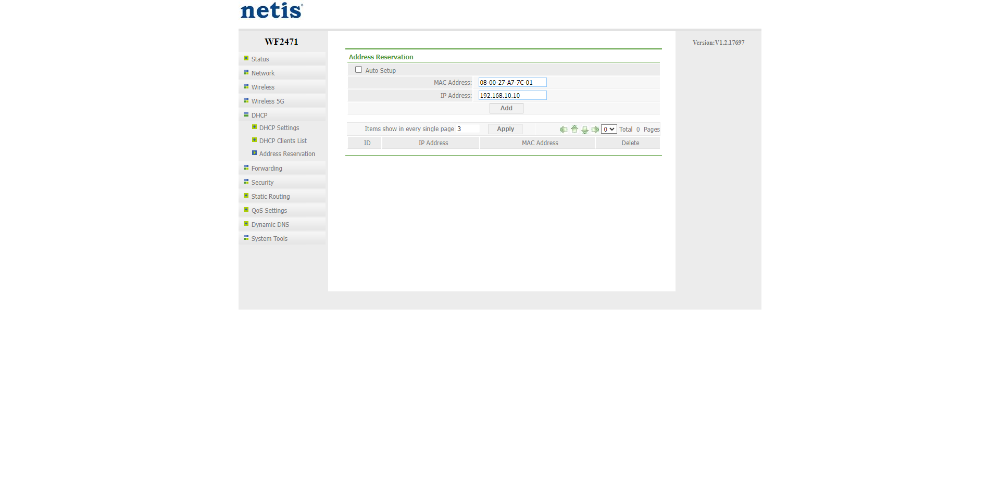
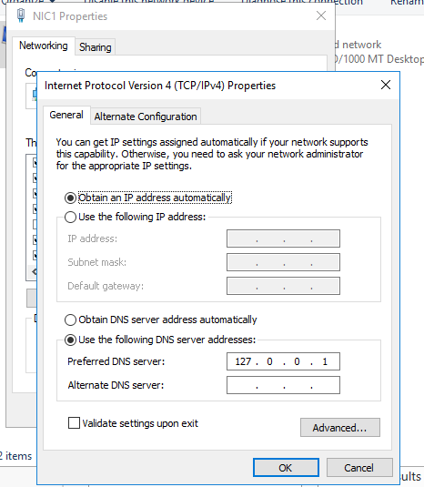
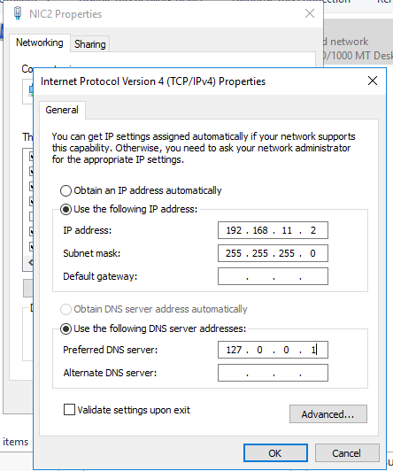
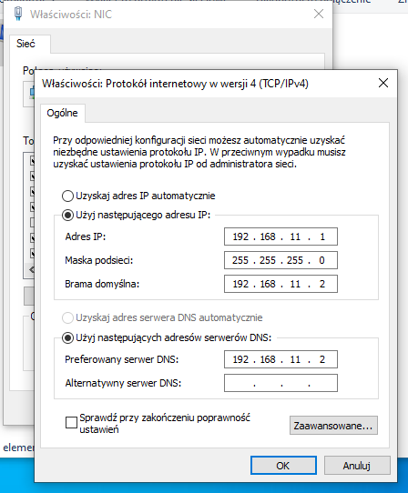
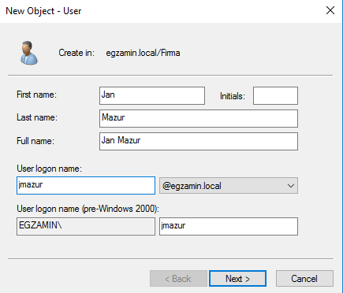

Zadania
egzaminacyjne
5. Zalecenia konfiguracji rutera:
brama 80.80.80.2
adres DNS 8.8.8.8 jeżeli to konieczne dodaj drugi adres DNS 8.8.4.4 
- zakres: 192.168.10.2 ÷ 192.168.10.10
- brama: 192.168.10.1
- zarezerwuj adres IP 192.168.10.10 dla interfejsu sieciowego serwera podłączonego do rutera.  
6. Skonfiguruj pierwszy interfejs sieciowy serwera według zaleceń:
b. adres IP: ustawiona opcja uzyskaj adres IP automatycznie,
c. serwer DNS: localhost. 
7. Skonfiguruj drugi interfejs sieciowy serwera według zaleceń
b. adres IP 192.168.11.2 z maską podsieci 255.255.255.0
c. serwer DNS: localhost. 
8. Skonfiguruj interfejs sieciowy NIC stacji roboczej według zaleceń
b. brama domyślna: adres twojego serwera,
c. serwer DNS: adres twojego serwera. 
9. Zainstaluj i uruchom na serwerze usługę rutingu z translacją adresów sieciowych, gdzie interfejs NIC1 będzie interfejsem publicznym.
13. Promuj serwer do roli kontrolera domeny. Utwórz nową domenę w nowym lesie o nazwie egzamin.local. Hasło dla konta Administrator trybu przywracania usług katalogowych ustaw na Q!wertyuiop
15. W domenie, w jednostce organizacyjnej Firma utwórz konto użytkownika z poniższymi danymi
- nazwa logowania: jmazur
- hasło docelowe: xsw2#EDC 
16. Utwórz na serwerze folder C:\biuro i udostępnij pod nazwą zasobu biuro.
17. Do utworzonego folderu ustaw uprawnienia sieciowe tylko dla: Administratorzy - Pełna Kontrola, Jan Mazur - Zmiana oraz zabezpieczenia tylko dla: Administratorzy - Pełna kontrola, Jan Mazur - Modyfikacja.